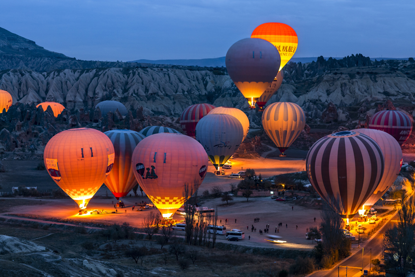

|
Cappadocia is a historical region in Central Anatolia, largely in the Nevşehir, Kayseri, Aksaray, Kırşehir, Malatya, Sivas and Niğde provinces in Turkey. Since the late 300s BC the name Cappadocia came to be restricted to the inland province , Upper Cappadocia, which alone will be the focus of this article. Lower Cappadocia is focused to elsewhere. According to Herodotus, in the time of the Ionian Revolt , the Cappadocians were reported as occupying a region from Mount Taurus to the vicinity of the Euxine (Black Sea). Cappadocia, in this sense, was bounded in the south by the chain of the Taurus Mountains that separate it from Cilicia, to the east by the upper Euphrates, to the north by Pontus, and to the west by Lycaonia and eastern Galatia. The name, traditionally used in Christian sources throughout history, continues in use as an international tourism concept to define a region of exceptional natural wonders, in particular characterized by fairy chimneys and a unique historical and cultural heritage. |
|
|
Cappadocia lies in central Anatolia, in the heartland of what is now Turkey.
The relief consists of a high plateau over 1000 m in altitude that is pierced by volcanic peaks, with Mount Erciyes (ancient Argaeus) near Kayseri (ancient Caesarea) being the tallest at 3916 m.
The boundaries of historical Cappadocia are vague, particularly towards the west.
To the south, the Taurus Mountains form the boundary with Cilicia and separate Cappadocia from the Mediterranean Sea.
To the west, Cappadocia is bounded by the historical regions of Lycaonia to the southwest, and Galatia to the northwest.
Due to its inland location and high altitude, Cappadocia has a markedly continental climate, with hot dry summers and cold snowy winters.
Rainfall is sparse and the region is largely semi-arid.
Cappadocia contained the sources of the Sarus and Pyramus rivers with their higher affluents, and also the middle course of the Halys, and the whole course of the tributary of the Euphrates later called Tokhma Su. But as no one of these rivers was navigable or served to fertilize the lands along its course, none has much importance in the history of the province.
|
 |